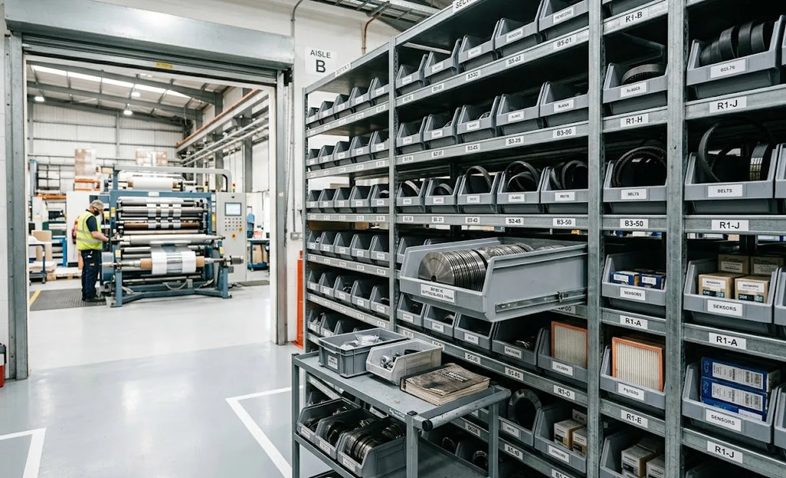
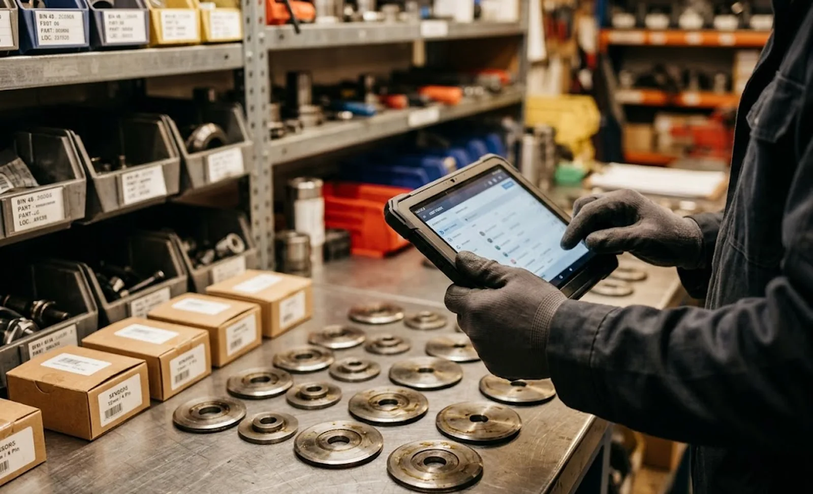

Published September 30, 2026 | By HDPTH Technical Editorial Team

Most converting plants treat spare parts inventory as an afterthought: a machine arrives, someone buys the supplier’s recommended package, and the shelf evolves by accident from that day forward. Five years later the store holds thousands of dollars of never-used components and — inevitably — no stock of the one fuse rating that stopped the line twice last quarter. It assumes you have already negotiated the initial warranty and spares package; the question here is what you hold after week one, how much of it, and how the stock is governed over the machine’s life.
Start from a criticality ranking, not a parts list
Take the machine’s full bill of materials and rank every line item on three questions, in this order:
- Downtime impact: if this part fails, does production stop? A web-guide sensor or a rewind drive fan stops everything; a door handle does not.
- Replenishment lead time: how long to get another one — from a local distributor, from the OEM, or from a custom manufacture half a world away?
- Price and shelf life: what does capital tied up cost you, and does the part degrade in storage (rubber seals, belts, batteries, adhesives)?
The result is four practical categories. A-items are high downtime impact with long lead times: hold at least one on the shelf regardless of price. B-items are high impact but quickly sourced locally: hold one, or none, with a named distributor agreement. C-items are consumables with predictable wear — blades, belts, filters, lubricants: hold working stock sized to consumption between orders. D-items are everything else: buy on demand and stock nothing.
| Category | Typical slitter rewinder examples | Stock policy |
|---|---|---|
| A — critical, long lead | Load cells, main drive components, custom rewind chucks, PLC or HMI units, special sensors | One on shelf; lead time documented per item |
| B — critical, short lead | Standard photoeyes and proximity switches, contactors, air-cylinder kits | One on shelf or a same-week distributor contract |
| C — planned wear | Slitting blades and holders, drive belts, air filters, seals and gaskets | Working stock sized to consumption between replenishments |
| D — rest | Covers, handles, cosmetic panels, general hardware | No stock; buy on demand |
Setting reorder points and safety stock without guesswork
For every A, B and C item, write two numbers into your inventory system. The reorder point is the expected consumption during the replenishment lead time, plus a safety allowance. The maximum is roughly two to three times that consumption. Both numbers come from the same inputs: planned running hours, changeover frequency, and the wear intervals the supplier states in the maintenance manual.
Worked example: your shear slitting knives are reground every 400 running hours and you run 160 hours a month, so a regrind cycle consumes one blade set roughly every 2.5 months. With an eight-week round trip to the sharpening service, the reorder point is about 1.6 sets — set it at 2 — and the maximum at 3. The safety allowance is where judgement lives: the more uncertain the lead time, the fatter the buffer.

Storage discipline: the cheapest uptime money can buy
An unlabelled shelf is a downtime waiting to happen. The minimum discipline for a slitter rewinder store is unglamorous but decisive:
- Every bin carries the OEM part number, the machine serial and position reference, and the current revision.
- Blades are stored cleaned, oiled and separated; shear knives protected on edge; rubber items away from light, heat and ozone.
- Issuing a part triggers a replacement order, automatically — the reorder point is checked at issue, not discovered at the next audit.
Obsolescence and the supplier contract
Converting machinery lives fifteen to twenty-five years; consumer electronics inside it sometimes five. When specifying, require the supplier to state the brand and series of drives, PLC and sensors, confirm those series are current-production, and commit to a defined period of spare-parts availability — ten years is a fair ask. Add two contractual protections: written notification before any component in your inventory is discontinued, and a last-time-buy window long enough for you to size a final purchase.
Close the loop with your own data
The biggest inventory improvements come after commissioning, from your own records. Machine data logging — even the basic production counters described in our data logging and ERP integration guide — gives you actual running hours, which convert directly into consumption forecasts for every wear item, and downtime records show which failures actually happen on your machine and materials. Run this review annually: re-rank criticality, adjust reorder points, and retire stock that has aged out.
Planning the spares package for a new machine?
Send HDPTH your planned utilisation, material mix and shift model. We quote a tiered spare-parts list with part numbers, prices and lead times, and support your inventory setup with recommended wear intervals.
Submit Your Project InquiryQuestions to put to every vendor
- Which ten items on our machine have the longest lead times, and what are they?
- Are drives, PLC and sensor series current-production, and what is your written spare-parts availability period?
- Will you notify us before discontinuing any component we hold, with a last-time-buy window?
- Can standard components be sourced locally, and will you publish exact specifications so substitutions do not drift?
Building maintenance capability around the machine?
Our guides on the preventive maintenance schedule and knife life and consumables cost pair with this inventory plan to form a complete after-sales readiness package.
Contact HDPTHFrequently asked questions
How many spare parts should we hold for a new slitter rewinder?
Start with a Tier-1 package bought with the machine — one to two of every consumable and small sensor type on the bill of materials, a seal and gasket set, belts, filters and fuses — then grow the stock based on your own failure and usage data. As a planning envelope, most single-machine plants end up holding spare parts worth roughly one to three percent of the machine price, concentrated in a small number of fast-moving lines rather than spread across the full catalogue.
What is the difference between criticality and price when ranking spare parts?
Criticality is the production impact of the part failing, not what it costs. A cheap proximity sensor can stop a complete line, while an expensive machine cover can wait weeks for delivery with no effect on output. Rank every part by downtime impact first, lead time second and price last — the classic mistake is stocking expensive big components while a two-dollar fuse or an out-of-stock photoeye holds the machine hostage.
How do we set reorder points and safety stock levels?
For each planned stock item, set a reorder point at expected consumption during the replenishment lead time plus a safety allowance, and a maximum near two to three times that consumption. The safety allowance grows with lead-time uncertainty — an eight-week import lead time with variable customs clearance needs more buffer than a two-week shipment from a local distributor. Review the levels after the first year of recorded usage and tighten them; initial estimates are always rough.
Should we buy genuine OEM parts or use third-party alternatives?
Use OEM or OEM-approved parts for anything safety-related, for precision slitting components such as blade holders and rewind chucks, and for anything covered by warranty — third-party substitutes can void coverage. Standard catalogued components such as bearings, belts, filters and common sensors can often be sourced from local distributors at lower cost and shorter lead time, provided you lock the exact specification and revision into your inventory records so substitutions never drift.
How can production data improve our spare parts inventory over time?
After the first six to twelve months, replace estimates with data: consumption records show true blade and filter change intervals, downtime records show which failures actually occur, and machine utilisation data shows whether a slow mover will ever be consumed before it ages out. Feed those numbers back into the criticality ranking and reorder points annually. Plants that close this loop typically cut stock value while improving availability, because guesswork inflates both the wrong and the right lines equally.
Sources
- ISO 281: Rolling bearings — dynamic load ratings and rating life, the basis for wear-part interval planning
- IEC 60204-1: Electrical equipment of machines — requirements relevant to electrical spares, storage and replacement
- ISO 55001: Asset management — framework for life-cycle management of physical assets and their spares
- EU Machinery Regulation (EU) 2023/1230: supplier information duties that support spare-parts availability